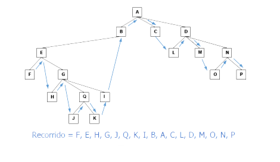

Definición
Los árboles N-arios Son árboles con nodos cuyo número de hijos no está limitado a priori.
Por tanto, no tiene sentido hablar de “Hijo a la Izquierda” e “Hijo a la Derecha”.
En su lugar hablaremos de:
Hijo a la Izquierda: Dado un nodo (Z), se refiere al hijo de Z situado más a la izquierda. Hermano a la Derecha: Dado un nodo (Z), se refiere a un hijo de Z que está situado justo a la derecha de otro nodo hijo de Z.
Ejemplo:
Figura 11.
El tipo de dato abstracto “´Árbol N”.
Al igual que con otros TAD, existe una gran variedad de operaciones que pueden llevarse a cabo sobre árboles.
Tabla 1.
Clasificación de los N-arios.
Los árboles N-arios se pueden clasificar en:
- Preorden: Raíz -> Hijo Izquierda -> Hijos Derecha.
- Postorden: Hijo Izquierda -> Hijos Derecha -> Raíz.
- Inorden: Hijo Izquierda -> Raíz -> Hijos Derecha.
- Por niveles: Nodos de un nivel, de izquierda a derecha. Pasar al siguiente nivel.
Se puede ver mediante los siguientes ejemplos:
Recorrido Preorden:
Figura 12.
Recorrido Postorden:
Figura 13.
Recorrido Inorden:
Figura 14.
Para obtenerlo, se recomienda efectuar un proceso de descomposición tal como se indica:
Tabla 2.
Figura 15.

Representaciones
A continuación, se indicarán las representaciones más utilizadas para árboles N-arios.
Representación con lista de hijos (vector de listas).
Se hace mediante una lista de adyacencia. Dado el árbol de la Figura 16, se mostrará la lista de hijos mediante un arreglo de listas.
Figura 16.
Figura 17.
Representación estática de Hijo-Izquierdo / Hermano Derecho.
Es necesario armar un arreglo para almacenar información de los nodos hijos.
Tabla 3.
Representación de posición del padre.
Usa una matriz para almacenar los nodos de árbol; de cada nodo se incluye su valor y la posición de su correspondiente nodo padre.
Retomando el árbol de la Figura 16, su representación de posición del padre es:
Tabla 4.
Representación dinámica de Hijo-Izquierdo / Hermano Derecho.
El hijo izquierdo en el árbol es el primer hijo del nodo, y se ubica como "hijo derecho" al hermano derecho de ese nodo. Retomando el árbol de la Figura 16, su representación es:
Figura 17.
Otro ejemplo de esta categoría de representación:
Figura 18.